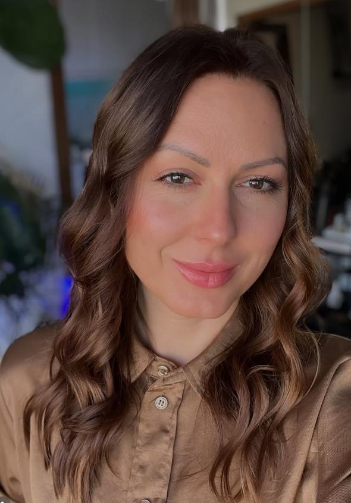

Conversa inicial
Você conta o que está buscando e eu explico como funciona o atendimento.
Nutricionista · PhD · Professora na UAlg
Sou Tamires Pavei Macan, nutricionista PhD e professora na Universidade do Algarve. Atendo casos complexos com orientação baseada em evidências científicas.

Sou nutricionista, PhD e professora na Universidade do Algarve. Na prática clínica, acompanho casos que exigem uma avaliação cuidadosa e decisões bem fundamentadas.
A consulta inicial é um espaço para falar sobre o seu caso e entender como funciona o atendimento.
Instagram ↗Como funciona
o acompanhamento.
Você conta o que está buscando e eu explico como funciona o atendimento.
Analiso as informações relevantes para entender o seu caso e definir as prioridades.
A partir da avaliação, definimos os próximos passos para o seu acompanhamento.
Conte o que você procura e conheça o atendimento. A conversa inicial é gratuita.
Agendar consulta gratuita ↗Agendamento pelo link.Você pode explicar o que procura e conhecer o atendimento. Essa conversa inicial é gratuita.
Sim. Minha atuação inclui casos complexos. Na conversa inicial, você pode explicar a sua situação para avaliarmos os próximos passos.
Acesse o link de agendamento nesta página e escolha uma das opções disponíveis.